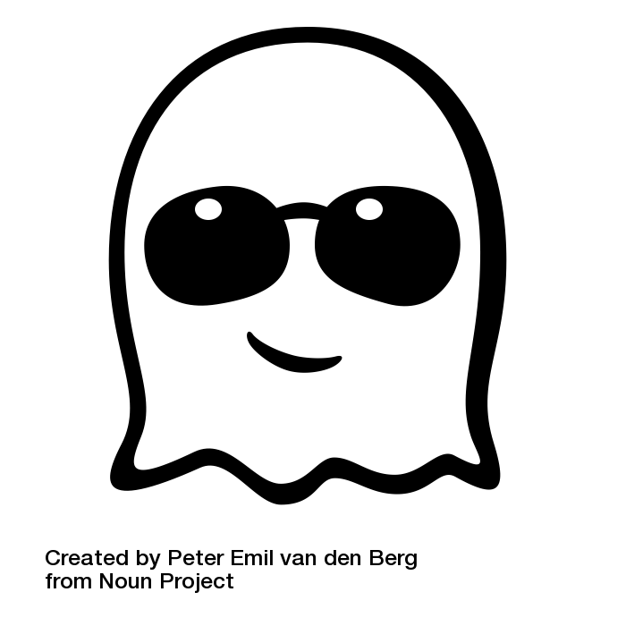

This is forum website where you can register and log in , follow users and share topics, subtopics in different categories as well as comment for each of these to different users. The forum is composed of three main user types being the admin, moderator and the regular user. All these are in a hierarchical manner to ensure the well functioning of the forum. This was a group project for the Database Systems course in Fall 2017-2018 Bilkent University.
This project was a FPGA project coded using SystemVerilog. It required an 8X8 RGB display. The logic behind the project was simple. On the RGB the user had three choices (these choices could be selected by using Basys3 FPGA) , each of which represented a game type. The user could play a normal TicTac Toe, an SOS game or a TicTacToe against an AI (computer).
Umudun Yurttaslari Projesi-UYP is an organization that aims to help the refugee kids living in Ankara regardless of their religion, ethnicity or beliefs. We have been in fundraising campaign to provide for the educational neccessities for these kids